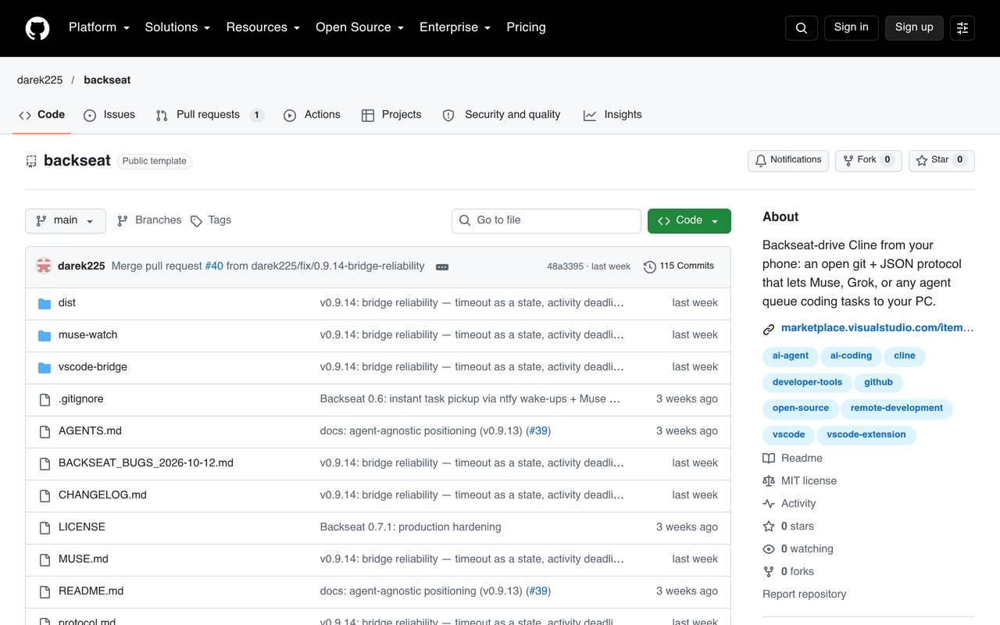

EXP-02
Backseat
A bridge that lets an AI architect on my phone drive Cline in VS Code on my PC, through GitHub.
LIVE, OPEN SOURCE

BUILT
An open protocol (git plus JSON task files) and a VS Code extension. I queue tasks from my phone; the extension polls a private GitHub repo, runs the task in Cline, and pushes the results back. It is agent-agnostic: any agentic AI that can use shell and git can sit in the architect seat, not just Muse. Shipped through v0.9.14.
WHAT BROKE
Three real failures shaped it. An overnight task produced zero output because VS Code stopped polling while I slept. Before v0.9.14, a timeout was treated as a verdict and work was genuinely lost. And the watcher daemon that reports bridge status died silently four times in one day because the VM reaps background processes.
HOW I JUDGE IT
A completion is only real when the bridge records prove it: the done record, the status record, and a bounded transcript tail on every completion. If the extension knows it, the bridge records it. Timeouts are now a state, not a verdict: late results revise the record for up to two hours, and the worktree auto-checkpoints on timeout and every 15 minutes.
RESULTS
v0.9.14 shipped with the timeout fix and checkpointing. The watcher now runs as a supervised systemd service that restarts itself. Distribution is honest so far: pull requests open on three awesome-lists, the repo had zero stars when they went in, and the VS Code Marketplace listing is shelved at my direction.